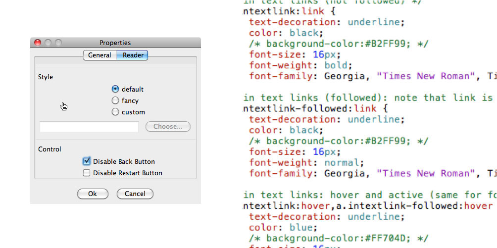

Customizing appearance
The Properties dialog, which can be opened using the Properties menu item in the File menu, lets you customize the exported story appearance and behaviour.

If you choose default or fancy style, the corresponding stylesheet will be used for the exported story. If you choose custom, you can select your own stylesheet, which will be copied into the export folder when the story is exported. The best way to create your own stylesheet is to export a HypeDyn story, and copy the styling.css file. Most of the visual elements of the story can be customized.